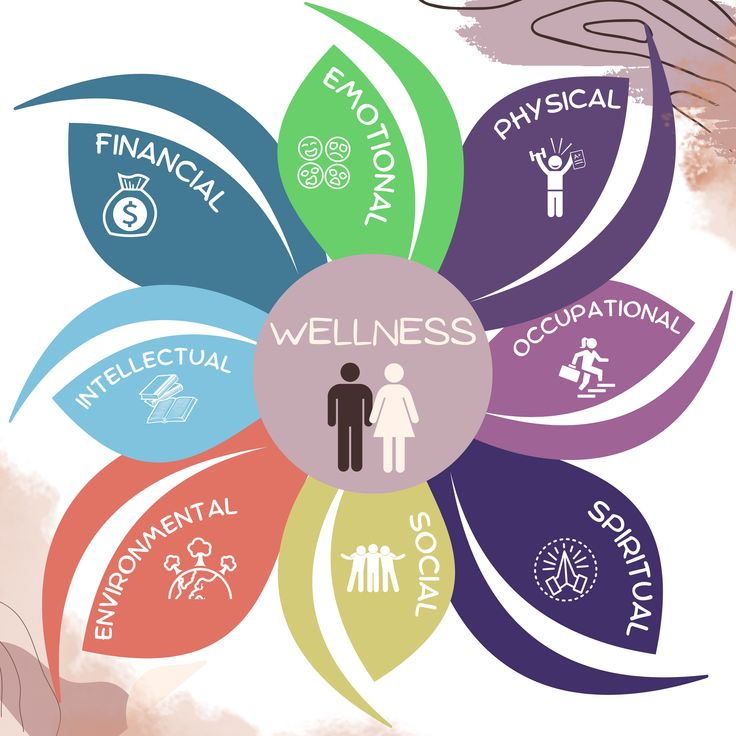
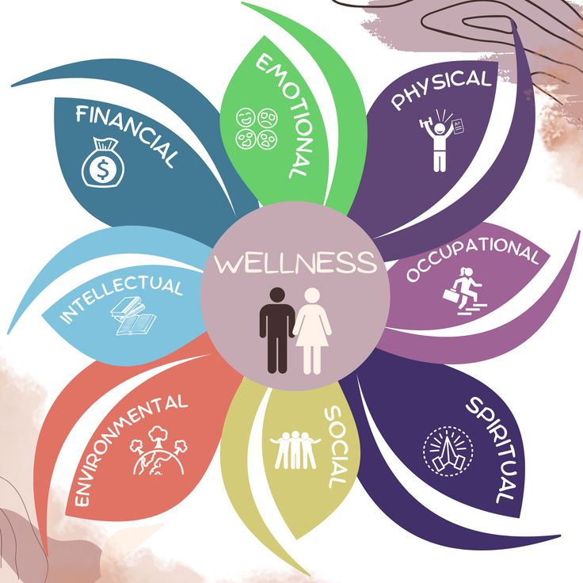

Self-Care Habits
Published on October 1, 2025.
In today's busy world, it's easy to forget about taking care of ourselves. Self-care doesn't have to be expensive or complicated, it's about building small habits that nurture your mind, body, and soul.
1. Start Your Morning Mindfull
Instead of rushing to your phone, try a few minutes of deep breathing, journaling, or stretching to set a positive tone for your day.
2. Stay Hydrated
Carrying a reusable water bottle helps you remember to drink enough water throughout the day.
3. Nourish with Whole Foods
Opt for colorful fruits, vegetables, and whole grains to fuel your body with real energy.
4. Rest Well
Quality sleep is the foundation of wellness. Aim for 7-8 hours and create a calming night routine.